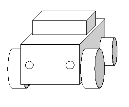

When you place an object in the 3D world coordinate system, you may find it convenient to keep the relative object-to-object placement information. For example, consider the following illustration and steps:

Also, if you often display the same objects, leave the calculation to the RCP, so that you can allocate the CPU processing time to other processes. This makes for more efficient and faster construction of the display list.
Nintendo® Confidential
Copyright © 1999
Nintendo of America Inc. All Rights Reserved
Nintendo and N64 are registered trademarks of Nintendo
Last Updated March, 1999